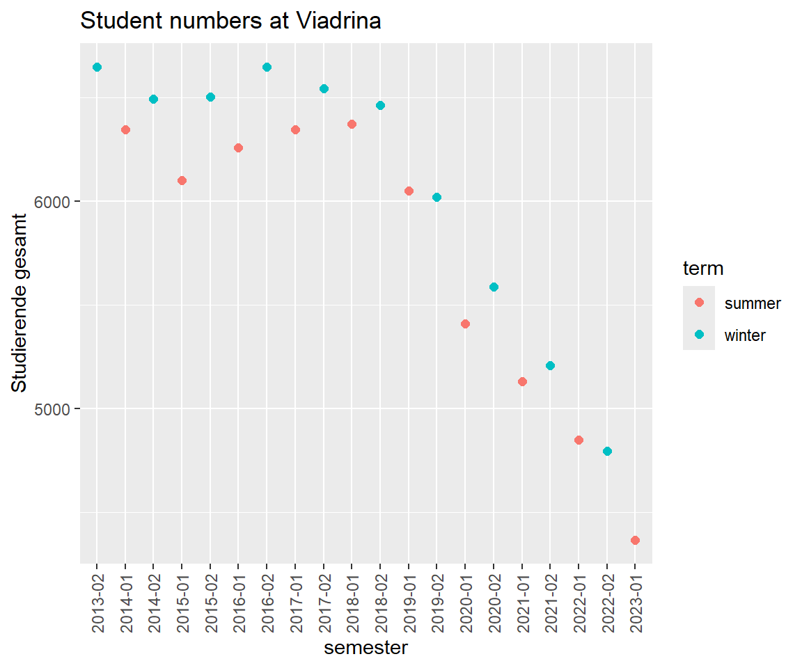
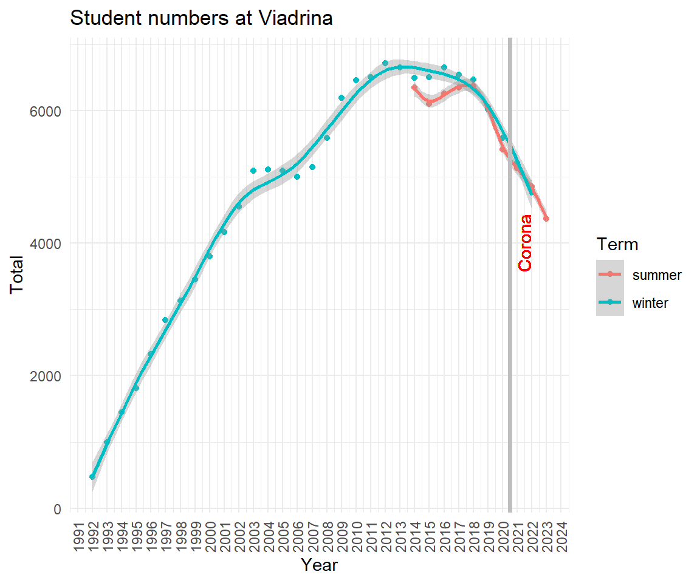

Chapter 6 Web Data
“Over the last two years alone, 90 percent of the data in the world was generated.”
Data scraping is a technique where a computer program extracts data from human-readable output coming from another program. Data scraping often takes place in web scraping (also known as crawling or spidering). In this process, an application is used to extract valuable information from a website. PDF scraping or more general report mining is the extraction of data from human-readable computer reports. It is worth considering alternatives before start scraping data.12
6.1 Most expensive paintings
What do The Card Players and Marshall Islands have in common?

Figure 6.1: The Card Players.

Figure 6.2: Flag of Marshall Islands.
Well, the first was sold for about 250.000.000 million USD in an auction in 2011 and the laters nominal gross domestic product is of similar size 220.000.000 million USD in 2019. About 60.000 people live in Marshall Islands. The most expensive paintings score similar to the gross domestic product of insular states.
This is the English Wikipedia article list of highest prices ever paid for paintings.
In a web browser use the keyboard shortcut CTRL + U (in Google Chrome, Firefox, Microsoft Edge, Opera) to view the source code of a webpage. Alternatively, right click and choose "show source code".
One approach is this. Use read_html() from rvest package to download the webpage. Extract the node table.wikitable with the html_nodes() command. Convert this node into a table with html_table() setting header=TRUE. Use this data in a pipe %>% with bind_rows() and as_tibble().
You can use any other scraping approach.
Store the final table of expensive paintings in paintings. The following DT table should yield identical results.
6.2 Student numbers at Viadrina
Did you notice less and less fellow students sitting next to you? We analyse enrollment numbers of Viadrina European University. Dezernat 1 administers and publishes student statistics. There is an overview page where they provide some time series data (overall student numbers from 1992 to 2020) and the number of study programs (between 1992 to 2014).
Information is presented in two ways, as tables in PDF, e.g. the time series on total student numbers:13
And as tables in HTML. For each semester there is summary information on the webpage (and more comprehensive data in PDF), like for winter term 2022/2023:
Most web browser allow to inspect the html source:
When you search for a characteristic value like 4.797 it shows:
<div class="zeile"><div class="dreispaltig">
<div class="text">
<table>
<tbody>
<tr>
<td style="width: 400px;">Studierende gesamt</td>
<td>4.797</td>
</tr>
<tr>
<td>weiblich</td>
<td>2.785</td>
</tr>
<tr>
<td>männlich</td>
<td>2.012</td>
</tr>
<tr>
<td>Deutsche</td>
<td>3.201</td>
</tr>
<tr>
<td>Ausländer/innen</td>
<td>1.596</td>Let's investigate the student numbers.
6.2.1 PDF scraping
Apply a programmatic way to download a PDF Use the built in download.file() function and specify an url and a destination and file name.
# Set URL for PDF
url <- "https://www.europa-uni.de/de/struktur/verwaltung/dezernat_1/statistiken/Entwicklung-der-Gesamtstudierendenzahl.pdf"
# Specify destination where file should be saved (and name)
destfile <- "data/Viadrina/Gesamtstudierendenzahl.pdf"
# Apply download.file function in R
download.file(url, destfile, mode = "wb")To extract a table from a PDF we use the pdftables package.14 The package is a wrapper for the PDFTables API. It requires an API key from https://pdftables.com/. You can register and get one for free. The result is stored as .csv file.
Definition
An application programming interface (API) is a way for two or more computer programs to communicate with each other. It is a type of software interface, offering a service to other pieces of software.
Be careful with your API keys. If you only use a file locally on your computer, you might be fine. Don't share this file. Don't upload it. If you upload an API key on GIT, you get a notification mail from https://www.gitguardian.com/. Instead, put your API in your environment. This can be done by a .Renviron file. Use usethis::edit_r_environ(scope = "project") in order to access and edit your information. 50 pages are for free.
Read more * https://daattali.gitbooks.io/stat545-ubc-github-io/content/bit003_api-key-env-var.html * https://resources.numbat.space/using-rprofile-and-renviron.html * https://github.com/expersso/pdftables
Scraped data often requires a lot of cleaning.
library(tidyverse)
# read csv file
viadrina_1992_2020_before <- read.csv("data/Viadrina/viadrina_students.csv", header = TRUE)
viadrina_1992_2020 <- viadrina_1992_2020_before
# replace header names by first row
names(viadrina_1992_2020) <- viadrina_1992_2020[1,]
# drop first row
viadrina_1992_2020 <- viadrina_1992_2020[-1,]
# drop last row
viadrina_1992_2020 <- viadrina_1992_2020[-30,]
# remove all \n
colnames(viadrina_1992_2020) <- gsub("[\r\n]", "", colnames(viadrina_1992_2020))
# readable column names
colnames(viadrina_1992_2020) <- c("Year", "Total", "Female", "Female_Pct",
"German", "German_Pct", "Foreign", "Foreign_Pct",
"Pole", "Pole_Pct")
# remove percentage sign
viadrina_1992_2020 <- viadrina_1992_2020 %>%
mutate(across(everything(), ~ ifelse(str_detect(.x, "%"),
parse_number(.x) / 10,
.x)))
# convert all chr to numeric
viadrina_1992_2020 <- viadrina_1992_2020 %>% mutate_if(is.character,as.numeric)6.2.4 Web scraping
To get more recent numbers, we rely on the webpage information. How can we access all semester data? Investigate the pattern of the URLs.
- https://www.europa-uni.de/de/struktur/verwaltung/dezernat_1/statistiken/2013-Wintersemester/index.html
- https://www.europa-uni.de/de/struktur/verwaltung/dezernat_1/statistiken/2014-Sommersemester/index.html
- https://www.europa-uni.de/de/struktur/verwaltung/dezernat_1/statistiken/2014-Wintersemester/index.html
- https://www.europa-uni.de/de/struktur/verwaltung/dezernat_1/statistiken/2015-Sommersemester/index.html
- https://www.europa-uni.de/de/struktur/verwaltung/dezernat_1/statistiken/2015-wintersemester/index.html
Usually the pattern is year-semester. Some winter semesters are capitalized, some are not (Wintersemester vs. wintersemester). We use the rvest package to web scrape static html content. It always starts with reading in the html data. Then pipe and use html_table() to extract tabular information (lucky us, there is only one table).
library(rvest)
read_html("https://www.europa-uni.de/de/struktur/verwaltung/dezernat_1/statistiken/2013-Wintersemester/index.html") %>%
html_table()
#> [[1]]
#> # A tibble: 7 × 2
#> X1 X2
#> <chr> <int>
#> 1 Studierende gesamt 6645
#> 2 weiblich 4206
#> 3 männlich 2439
#> 4 Deutsche 5001
#> 5 Ausländer/innen 1644
#> 6 1. Fachsemester 1783
#> 7 1. Hochschulsemester 1110Now, we would like to do this for every subpage (semester) and combine the data in one table. Focus on the variable component in the URL and create a vector of all semesters.
# the manual way
winters <- seq(from=2013, to=2022)
summers <- seq(from=2014, to=2023)
winters <- paste0(winters, "-wintersemester")
summers <- paste0(summers, "-Sommersemester")
all_terms <- c(rbind(winters, summers))
all_terms[1] <- "2013-Wintersemester"
all_terms[3] <- "2014-Wintersemester"
# we can paste them together
all_url <- paste0("https://www.europa-uni.de/de/struktur/verwaltung/dezernat_1/statistiken/", all_terms, "/index.html")Create a for loop to repeat the rvest procedure for each element in the URL list.
Definition
A loop is a programming structure that repeats a sequence of instructions until a specific condition is met.
There are two more components. We initialize a list to store each iteration of the loop.
tables <- list()
index <- 1
for(i in 1:length(all_url)){
table <- all_url[i] %>%
read_html() %>%
html_table()
tables[index] <- table
index <- index + 1
}
df <- do.call("cbind", tables)More and more cleaning.
df[,c(seq(from=3, to=40 , by=2))] <- NULL
colnames(df) <- c("Variable", all_terms)
# transpose dataframe
viadrina_2013_2023 <- as.data.frame(t(df))
# replace header names by first row
names(viadrina_2013_2023) <- viadrina_2013_2023[1,]
# drop first row
viadrina_2013_2023 <- viadrina_2013_2023[-1,] Once more, there are slightly different formats for numbers in winter term 2019, 2020 and 2021. In these terms they use a . for digit grouping, e.g. 3.607 instead of 3607.
# all chr to numeric
# viadrina_2013_2022 <- viadrina_2013_2022 %>% mutate_if(is.character,parse_number)
#viadrina_2013_2022 <- viadrina_2013_2022 %>% mutate_if(is.character,as_numeric)
viadrina_2013_2023 <- viadrina_2013_2023 %>% mutate_if(is.character,as.numeric)
# row 13, 15, 17, columns 1 to 6, multiply by 1000
viadrina_2013_2023[c(13,15,17,19), c(1:6)] <- viadrina_2013_2023[c(13,15,17,19), c(1:6)] * 1000
# round all numbers
# viadrina_2013_2022 <- viadrina_2013_2022 %>% mutate_if(is.numeric, round)
# multiply some rows by 1000
# viadrina_2013_2022[c(13,15,17),] <- viadrina_2013_2022[c(13,15,17),] %>%
# mutate_all(.funs = funs(. * 1000))
# fix last column and divide by 1000
# viadrina_2013_2022[c(13,15,17),7] <- viadrina_2013_2022[c(13,15,17),7]/1000
# create a semester variable
viadrina_2013_2023$year <- substr(all_terms, start = 1, stop = 4)
viadrina_2013_2023$term <- rep(c("winter", "summer"), 10)
viadrina_2013_2023$semester <- paste0(viadrina_2013_2023$year, rep(c("-02", "-01"), 10))
# row names
rownames(viadrina_2013_2023) <- 1:nrow(viadrina_2013_2023) 6.2.5 Most recent student numbers
There is a structural difference between summer and winter term. Most new enrollments are in winter.
viadrina_2013_2023 %>%
ggplot(aes(x=semester, y = `Studierende gesamt`)) +
geom_point(aes(col=term), size=2) +
#geom_point(aes(y = `Studierende gesamt`, fill = "Total")) +
#geom_point(aes(y = `1. Fachsemester`, fill = "First years")) +
#geom_point(aes(y = `1. Hochschulsemester`, fill = "First sem")) +
labs(title = "Student numbers at Viadrina") +
theme(axis.text.x = element_text(angle = 90, vjust = 0.5, hjust=1))
6.2.6 The long run trend
Combine old and new data.
via_1992_2020 <- viadrina_1992_2020 %>%
select(Year, Total) %>%
mutate(Term = "winter")
via_2013_2023 <- viadrina_2013_2023 %>%
rename(Year = year, Term = term, Total = `Studierende gesamt`) %>%
select(Year, Total, Term)
via_1992_2023 <- rbind(via_1992_2020, via_2013_2023)
via_1992_2023$Year <- as.numeric(via_1992_2023$Year)Plot and polish. Assume the enrollment for winter 2020/2021 was not affected by Corona virus.
via_1992_2023 %>%
#filter(Term == "winter") %>%
ggplot(aes(x=Year, y=Total, col = Term)) +
geom_point() + geom_smooth(method = "gam") +
scale_x_continuous(breaks = scales::pretty_breaks(n = 28)) +
labs(title = "Student numbers at Viadrina") +
theme_minimal() +
theme(axis.text.x = element_text(angle = 90, vjust = 0.5, hjust=1)) +
geom_vline(xintercept=2020.5, colour="grey", linetype = "solid", lwd = 1.3) +
geom_text(aes(x=2021, y=4000, label="Corona"), colour="red", angle=90, vjust = 1) 
(1) Look for a download button. (2) Search same or similar data somewhere else. (3) Check if there is an API. (4) Ask the website owner for the data.↩︎
Get the PDF https://www.europa-uni.de/de/struktur/verwaltung/dezernat_1/statistiken/Entwicklung-der-Gesamtstudierendenzahl.pdf↩︎
You may use other free services. Search for Online converter PDF to csv/xlsx↩︎